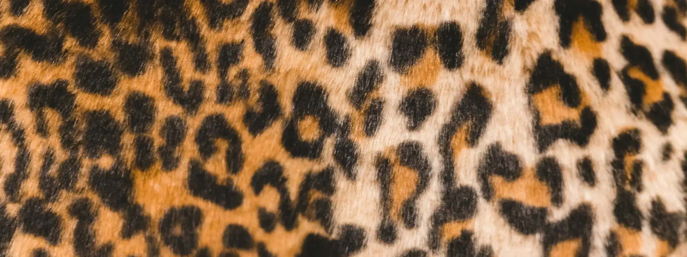
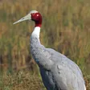

Animals & collections
Medical & care
Operations
Administration
More


35Species
9,044Animals
15Sections
104Enclosures
Sections15 in this site
 Aviary section8,670Herbivore section214Reptile house72Carnivore section38Primate section31
Aviary section8,670Herbivore section214Reptile house72Carnivore section38Primate section31
Wetland12Quarantine6Transfer section1View all 15 sectionsAviary section
52 enclosures · 8,670 animals · 25 species
Aviary 1

100 animals · 1 species
Aviary 2117 animals · 2 species
Aviary 3133 animals · 3 species
Inspection dueAviary 4150 animals · 1 species
Aviary 5167 animals · 2 species
Aviary 6183 animals · 3 species
1 under treatmentAviary 7200 animals · 1 species
Aviary 8217 animals · 2 species
Aviary 9233 animals · 3 species
Aviary 10100 animals · 1 species
Inspection dueAviary 11117 animals · 2 species
Aviary 12133 animals · 3 species
Showing 12 of 52 enclosuresView all 52 enclosures
Housing · site
Do
- Lay each screen out for its size: rail and columns on wide screens, not a stretched phone.
- Keep the order of content the same at every size.
Don't
- Hide content on phones that people need; move it down instead.
- Let a screen scroll sideways at any size.